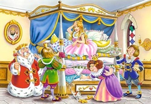

Dagen därpå frågade de flickan hur hon hade sovit.
-Fruktansvärt dåligt!, sade flickan.
Det var som om det har legat en stor knöl i sängen.
- Jag är alldeles blå och brun över hela kroppen, sa flickan.
Då såg drottningen mycket nöjd och glad ut, för det måste ju vara en riktig prinsessa, som hade ett sådant ömtåligt skinn så hon kunde känna den lilla ärtan genom tjugo madrasser och tjugo bolstrar.